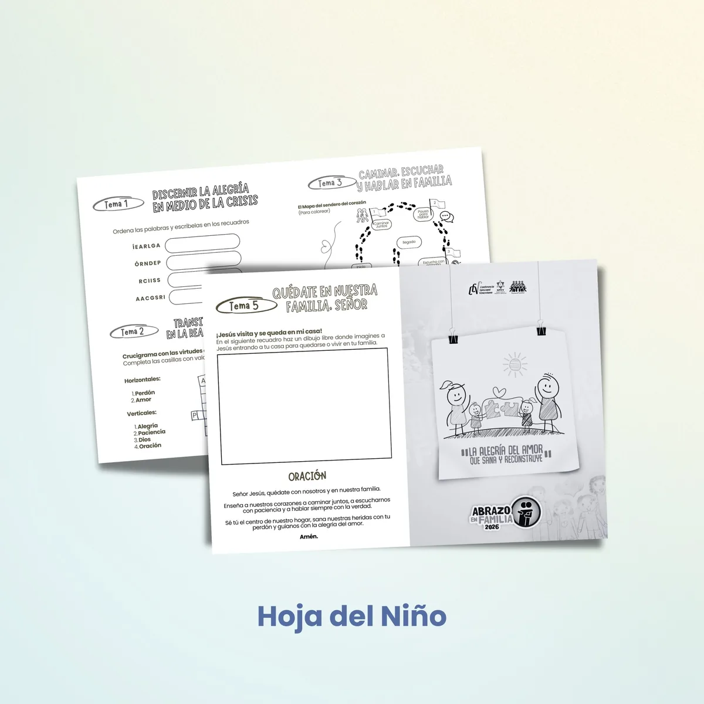

Campaña Abrazo en Familia 2026
36.ª edición, según la CEV, de la campaña anual por la familia, con el tema «La alegría del amor que sana y reconstruye».

Datos del evento
- Fecha
- Del 1 de octubre al 8 de noviembre de 2026
- Hora
- No publicada en las notas oficiales.
- Modalidad y lugar
- Presencial · Parroquias, centros educativos y movimientos de cada diócesis
- Organiza
- Conferencia Episcopal Venezolana, a través del Área de Familia y Vida del Centro de Laicos, Familia y Juventud
- Estado
- Realizado: semana de sensibilización cerrada el 8 de noviembre; la campaña sigue vigente
Cómo fue
La CEV lanzó la campaña el 9 de octubre de 2026. Propone a las familias un itinerario para reencontrarse y sanar heridas, con dinámicas de grupo, espacios de diálogo y materiales para niños, jóvenes y adultos. La guía se pide a los equipos parroquiales de pastoral familiar.
Las diócesis la llevaron a las plazas y a las aulas. En El Tigre, el obispo y su equipo la presentaron en rueda de prensa el 2 de octubre. En Carora, la Pastoral Familiar capacitó a agentes desde el 16 de octubre, preparó un encuentro con docentes de más de 30 instituciones y el sábado 7 de noviembre salió a las plazas en una jornada de sensibilización. Acarigua-Araure organizó la campaña en cuatro fases, con visitas casa por casa y talleres.
La semana de sensibilización de Carora fue del 1 al 8 de noviembre y cerró con el Día del Abrazo en Familia, el domingo 8, y con el compromiso de mantener la campaña activa el resto del año.
Qué se hizo
- Lanzaron la campaña a nivel nacional el 9 de octubre de 2026.
- Trabajaron cinco temas en familia, según notas diocesanas: «Discernir la alegría en medio de la crisis»; «Transitar juntos en la realidad del hogar»; «Caminar, escuchar y hablar en familia»; «Familia: unidos en la reconstrucción de nuestro hogar»; «Quédate en nuestra familia, Señor».
- Capacitaron a agentes pastorales, se reunieron con docentes y salieron a las plazas, en las diócesis.
Quién participó
Solo cargos públicos. Los nombres de laicos participantes y de menores no se publican.
- El equipo de coordinación del Área de Familia del Centro.
- Los obispos de El Tigre, Carora y Acarigua-Araure y sus equipos diocesanos de Pastoral Familiar.
Cifras
- Más de 500 agentes pastorales capacitados en los municipios Torres y Urdaneta, según la Diócesis de Carora, en notas de la CEV del 16 de octubre y del 9 de noviembre de 2026. Es una cifra diocesana, no nacional.
- Más de 30 instituciones educativas y unos 80 docentes previstos en Carora, según la nota de la CEV del 16 de octubre de 2026.
Galería

Manos sosteniendo el afiche de la campaña Abrazo en Familia 2026 junto al logotipo y el aviso de material disponible.. Crédito: Centro de Laicos, Familia y Juventud, CEV. 
Manos sosteniendo la portada de la Guía del Facilitador de la campaña Abrazo en Familia.. Crédito: Centro de Laicos, Familia y Juventud, CEV. 
Hojas de actividades de la campaña Abrazo en Familia presentadas como Hoja del Niño, sobre fondo suave en tonos azules.. Crédito: Centro de Laicos, Familia y Juventud, CEV.
Fuentes
- Lanzamiento nacional (nota de la CEV del 9 de octubre de 2026)
- Diócesis de El Tigre inició la campaña (nota de la CEV del 2 de octubre de 2026)
- Carora inicia la capacitación (nota de la CEV del 16 de octubre de 2026)
- Acarigua-Araure impulsa la campaña (nota de la CEV del 26 de octubre de 2026)
- Acarigua-Araure promueve la 36.ª edición (nota de la CEV del 30 de octubre de 2026)
- Carora cierra su semana de sensibilización (nota de la CEV del 9 de noviembre de 2026)